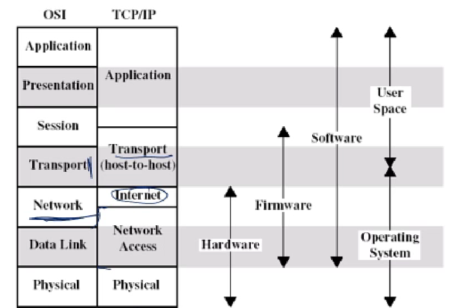

La primera es un modelo y la otra es una arquitectura
MESOPOTAMIA Y FB
Firmware
| Capa | Funciones |
|---|---|
| Aplicación |
|
| Transporte |
|
| Red |
|
| Enlace |
|
| Física |
|

PDU
Buffer
Todos los equipos finales tienen finalmente 5 capas. Los dispositivos intermedios pueden tener menos capas.